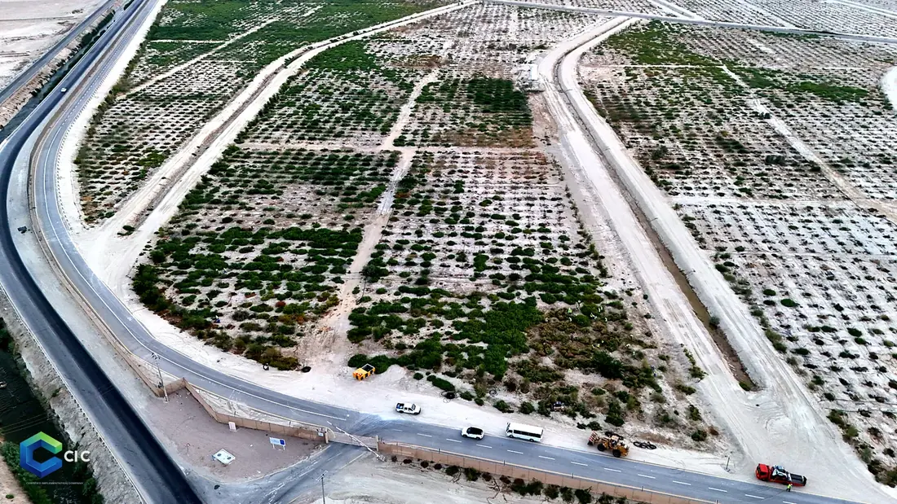
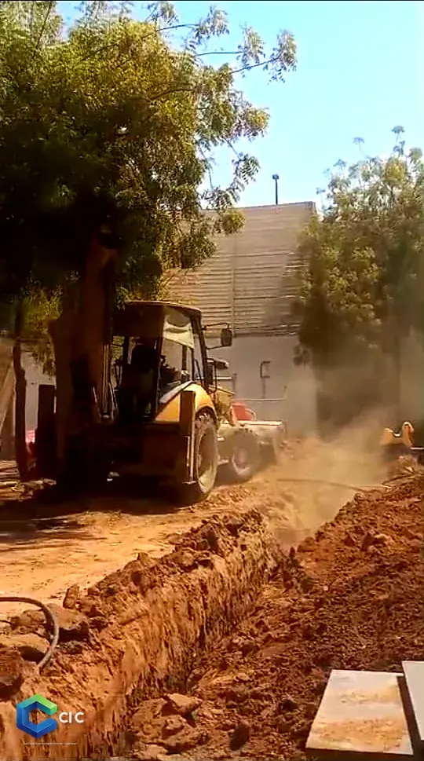

مقاولات عامة بمعايير هندسيةمعتمدة في كل أنحاء المملكة.
شركة التنفيذ المعتمد (CIC)؛ مقاول سعودي متخصص في مشاريع الإنشاءات وبناء العظم، والطرق والبنية التحتية، وتدعيم المباني وترميمها، واللاندسكيب في مختلف مناطق المملكة. نجمع بين الدقة الهندسية، ومعايير السلامة الصارمة، والالتزام الحرفي بالجداول الزمنية.
24.47°N · 39.61°Eاللوحة A-01 · المملكة العربية السعوديةمرّر للاستكشاف
مشروع مزرعة الليمون — الأحساء◆مشروع الزراعة العمودية — وزارة البيئة والمياه والزراعة◆استكمال تنفيذ طريق الأمير نايف◆هدم وحفر مركز تجاري◆تدعيم معدني — عمارة أبراق الرغامي◆هدم وحفر مدرسة الفصحى◆تحسين ورفع كفاءة الطرق المحورية — طريق الملك عبدالله◆زراعة وتشجير طريق الملك عبدالله — زون 7◆صيانة الأشجار حول مبنى إمارة منطقة المدينة المنورة◆ممشى طريق الملك سلمان◆
مشروع مزرعة الليمون — الأحساء◆مشروع الزراعة العمودية — وزارة البيئة والمياه والزراعة◆استكمال تنفيذ طريق الأمير نايف◆هدم وحفر مركز تجاري◆تدعيم معدني — عمارة أبراق الرغامي◆هدم وحفر مدرسة الفصحى◆تحسين ورفع كفاءة الطرق المحورية — طريق الملك عبدالله◆زراعة وتشجير طريق الملك عبدالله — زون 7◆صيانة الأشجار حول مبنى إمارة منطقة المدينة المنورة◆ممشى طريق الملك سلمان◆
منهجية العمل
من الرياض إلى المدينة المنورة، ومن الأحساء إلى جازان، يحكم كل مشروع لدينا الانضباط الهندسي نفسه. لا تتحرك معدّة قبل دراسة ميدانية دقيقة لظروف الموقع ومتطلباته، ولا تبدأ مرحلة قبل اعتماد سابقتها وفق أنظمة جودة وسلامة موثّقة، وفي كل مرحلة تصلك تقارير شفافة بالصور والأرقام تُبقيك على اطلاع كامل بمشروعك.
50+مشروعاً منجزاً للقطاعين الحكومي والخاص
4تخصصات هندسية تحت إدارة موحّدة
ما نتقنه
أربعة تخصصات هندسية. مسؤولية واحدة.
بدلاً من تشتّت مشروعك بين عدة مقاولين، نضع بين يديك منظومة تنفيذ متكاملة تبدأ من الحفر والأساسات وبناء العظم، وتمتد إلى البنية التحتية، والتدعيم الإنشائي، واللاندسكيب في كافة مناطق المملكة.
نوثّق واقع العمل لا الوعود؛ لقطات جوية حقيقية بالدرون من مواقعنا النشطة، نحدّثها باستمرار لتتابع تطوّر الإنجاز مرحلةً بمرحلة.
قيد التنفيذالتصوّر المعماري النهائي
أعمال مدنية
مشروع الزراعة العمودية
الجهة المالكة
وزارة البيئة والمياه والزراعة
بدأ العمل
أكتوبر 2025
تنفيذ الأعمال الإنشائية الكاملة لمبنى متعدد الأدوار يحتضن منظومة زراعة عمودية متطورة تدعم مستهدفات الأمن الغذائي ورؤية السعودية 2030. يشمل نطاقنا الحفر والأساسات، والهيكل الخرساني المسلح، والبلاطات والأسقف، مع توثيق جوي دوري بالدرون لكل مرحلة.
حفر وأساسات
هيكل خرساني مسلح
بلاطات وأسقف
توثيق دوري بالدرون

قيد التنفيذمن الموقع بالدرون
لاندسكيب وري
مشروع مزرعة الليمون
الجهة المالكة
وزارة البيئة والمياه والزراعة
الموقع
الأحساء
بدأ العمل
يوليو 2026
تطوير وتأهيل مزرعة ليمون نموذجية على مساحة واسعة في الأحساء؛ تشمل أعمالنا تسوية الأراضي وتمهيدها، وشق الطرق الداخلية، وتأسيس خطوط الزراعة وشبكات الري المتكاملة، بأسطول معدات ثقيلة وفرق ميدانية تعمل بوتيرة يومية منتظمة.
تسوية وتمهيد الأراضي
طرق داخلية
خطوط زراعة وري
معدات ثقيلة
من أعمالنا
سجلّ أعمال يتحدث عن نفسه
نماذج منتقاة من مشاريع سلّمناها بنجاح في مختلف مناطق المملكة؛ من المحاور المرورية الكبرى وتدعيم المباني الحيوية، إلى البنية التحتية في ميناء جازان.
اسحب أو مرّر
012025
طرق وبنية تحتية
استكمال تنفيذ طريق الأمير نايف
أعمال قص وترحيل وتسوية الطريق، وتوريد وتركيب شبكات تصريف مياه السيول والبردورات وفق المواصفات القياسية.
022025
أعمال مدنية
هدم وحفر مركز تجاري
تنفيذ أعمال الهدم الآمن والحفر العميق بعمق 8 أمتار لتجهيز موقع إنشاء مشروع فندقي.
032025
تدعيم مبانٍ
تدعيم معدني — عمارة أبراق الرغامي
تصميم وتنفيذ منظومة تدعيم معدني عالية التحمّل لأعمدة وأسقف الدورين السابع والثامن.

042025
أعمال مدنية
هدم وحفر مدرسة الفصحى
أعمال الهدم الانتقائي والحفر والترحيل الميداني تمهيداً لإعادة تأهيل المبنى المدرسي وترميمه.
052024
طرق وبنية تحتية
تحسين ورفع كفاءة الطرق المحورية — طريق الملك عبدالله
تطوير شامل للبنية التحتية شمل تمديدات الكهرباء، وشبكات الري، والأرصفة والبردورات، وأعمال التبليط.
062024
لاندسكيب وري
زراعة وتشجير طريق الملك عبدالله — زون 7
توريد وزراعة أشجار النيم والجلوكا والسدر الملائمة للبيئة المحلية، مع تأسيس وتشغيل شبكات الري والمحابس والمضخات.
50+مشروعاً منجزاً للقطاعين الحكومي والخاص
مشاريع أخرى من أعمالنا
منهجيتنا
أربع خطوات واضحة.. من المعاينة حتى التسليم
01
المعاينة والدراسة الميدانية
نعاين الموقع على الطبيعة، ونراجع المخططات والمتطلبات، ونقيّم الظروف الفنية الفعلية بدقة قبل التسعير.
02
العرض الفني والمالي الشفاف
نقدّم عرضاً مفصّلاً يوضّح البنود والكميات والمواصفات والجدول الزمني بدقة، دون أي تكاليف مخفية.
03
التنفيذ المنضبط والإشراف المباشر
تباشر فرقنا الميدانية العمل تحت إشراف هندسي مستمر، مع تزويدك بتقارير تقدّم دورية موثّقة بالصور.
04
التسليم والمتابعة الفنية
نسلّم المشروع مطابقاً للمواصفات المتفق عليها، ونواصل المتابعة الفنية بعد التسليم للاطمئنان على سلامة التشغيل وكفاءته.
لماذا التنفيذ المعتمد
معايير هندسية لا تقبل التنازل
01
السلامة المهنية أولاً (HSE)
نطبّق بروتوكولات سلامة مهنية صارمة في كافة مواقعنا؛ لحماية الكوادر والممتلكات ومحيط المشروع دون أي تهاون.
02
جودة تُقاس بالأرقام (QA/QC)
نعتمد نقاط فحص ومراجعة هندسية موثّقة في كل بند، ولا ننتقل إلى المرحلة التالية قبل اعتماد مطابقة المرحلة السابقة بالكامل.
03
إدارة شفافة بلا مفاجآت
مدير مشروع مسؤول يتواصل معك مباشرة، وجدول زمني معتمد، وتقارير مرحلية بالصور والأرقام؛ لتعرف أين وصل مشروعك في كل لحظة دون أن تضطر للسؤال.
04
استدامة في كل قرار
نرشّد استهلاك المياه والطاقة في مواقعنا، ونعتمد أنظمة ري موفّرة وإدارة مسؤولة لمخلفات الهدم والحفر، انسجاماً مع المستهدفات البيئية لرؤية السعودية 2030.
نطاق العمل
مقاولون في كل مناطق المملكة
مقرّنا الرئيسي في المدينة المنورة، وفرقنا تتحرك إلى مواقع المشاريع في جميع مناطق المملكة العربية السعودية، بنفس المعايير ونفس الإدارة.
01الرياض
02مكة المكرمة وجدة
03المدينة المنورة
04المنطقة الشرقية
05القصيم
06جازان
07عسير
08تبوك
09حائل
10نجران
11الباحة
12الجوف
13الحدود الشمالية
بأي اسم تبحث عنّا
مقاول عظم؟ ترميم عمارة؟ تدعيم مبنى؟ كلها عندنا.
هذه الكلمات التي يبحث بها أهل المملكة عن مقاول، والأسئلة التي تصلنا منهم كثيراً، مع إجاباتها.
شركة مقاولات
مقاول عظم
بناء عظم فيلا
ترميم عمارة
تدعيم مبنى آيل
مقاول أسفلت وبردورات
تنسيق حدائق
شبكة ري بالتنقيط
مقاول هدم وترحيل
أبغى مقاول عظم لعمارة سكنية، تنفذون؟
نعم، ننفّذ بناء العظم كاملاً: الحفر، والقواعد والأساسات، والأعمدة، والأسقف والبلاطات، وجميع الأعمال الخرسانية، بإشراف هندسي مباشر ونقاط فحص للجودة في كل مرحلة.
عندي عمارة قديمة فيها تشققات، وش الحل؟
نبدأ بتقييم هندسي لتحديد سبب التشققات، ثم نقترح الحل المناسب: ترميم العناصر المتضررة، أو تدعيم معدني للأعمدة والأسقف، أو تدعيم الأساسات إذا كان هناك هبوط أو ميلان.
تشتغلون في الرياض وجدة والشرقية؟
نعم، نعمل في جميع مناطق المملكة، ومقرّنا الرئيسي في المدينة المنورة.
أسئلة شائعة
إجابات واضحة قبل أن تبدأ مشروعك
ما هي شركة التنفيذ المعتمد للمقاولات (CIC)؟
شركة التنفيذ المعتمد للمقاولات (CIC) مقاول سعودي للمقاولات العامة، مقرّها الرئيسي في المدينة المنورة وتعمل في جميع مناطق المملكة. تتخصص في أربعة مجالات تحت إدارة واحدة: الإنشاءات وبناء العظم، والطرق والبنية التحتية، وتدعيم المباني وترميمها، واللاندسكيب وشبكات الري، وقد أنجزت أكثر من 50 مشروعاً للقطاعين الحكومي والخاص. مسجّلة بسجل تجاري 4650273835 ورقم ضريبي 312325975900003.
هل تعملون في جميع مناطق السعودية أم في المدينة المنورة فقط؟
نعمل في جميع مناطق المملكة انطلاقاً من مقرّنا في المدينة المنورة (حي الرانوناء). ومن مشاريعنا خارجها تطوير البنية التحتية لمباني ميناء جازان وفق مواصفات أرامكو للموانئ، ومشروع مزرعة الليمون في الأحساء لصالح وزارة البيئة والمياه والزراعة الجاري تنفيذه حالياً.
ماذا يشمل عقد بناء العظم لديكم؟
يشمل عادةً تجهيز الموقع والحفر، وصب النظافة والقواعد والأساسات، والرقاب والميد، والأعمدة والجدران الخرسانية، والبلاطات والأسقف حتى اكتمال الهيكل الخرساني المسلح، مع أعمال الردم والدك. ونحدّد النطاق النهائي بنداً بنداً في العرض الفني والمالي وفق مخططات مشروعك.
كم تكلفة بناء العظم أو تدعيم مبنى في السعودية؟
تختلف التكلفة باختلاف المساحة وعدد الأدوار وحالة التربة أو المبنى ونوع التدعيم المطلوب؛ لذلك لا نعطي سعراً جزافياً. نبدأ بمعاينة فنية ميدانية، ثم نقدّم عرضاً فنياً ومالياً مفصّلاً بالبنود والكميات والمدة الزمنية، دون تكاليف مخفية.
ما العلامات التي تدل على أن المبنى يحتاج إلى تدعيم أو ترميم؟
الشروخ المائلة أو المتّسعة في الجدران والأعمدة، وميلان المبنى أو هبوط جزء منه، وتساقط الغطاء الخرساني وظهور حديد التسليح، أو تعرّض المبنى لحريق أو انفجار، أو الرغبة في إضافة أدوار وأحمال جديدة. وفي كل الحالات نبدأ بفحص وتقييم هندسي دقيق للحالة قبل اقتراح الحل.
ما الفرق بين ترميم العمائر وتدعيم المباني؟
الترميم يعيد العناصر المتضررة إلى حالتها السليمة، أما التدعيم فيرفع قدرة العناصر الإنشائية على تحمّل الأحمال، مثل تقوية الأعمدة والأسقف بالتدعيم المعدني أو تدعيم الأساسات لإيقاف الميلان. وكثير من المباني القديمة تحتاج الاثنين معاً.
هل يمكن تدعيم مبنى قائم أو معالجة ميلانه دون هدمه؟
نعم في أغلب الحالات. نفّذنا تدعيم أساسات لإيقاف ميلان مبنى إدارة تعليم البنات، ومنظومة تدعيم معدني لأعمدة وأسقف الدورين السابع والثامن في عمارة أبراق الرغامي، وإنشاء سقف بين دورين بتقنية تزريع الحديد، وكلها دون هدم.
هل تنفذون مشاريع للجهات الحكومية؟
نعم. ننفّذ حالياً مشروعين لصالح وزارة البيئة والمياه والزراعة: مبنى الزراعة العمودية، ومزرعة الليمون في الأحساء. ومن أعمالنا السابقة رفع كفاءة طريق الملك عبدالله، واستكمال تنفيذ طريق الأمير نايف، وممشى طريق الملك سلمان، وتطوير البنية التحتية لمباني ميناء جازان.
كيف أختار شركة مقاولات موثوقة في السعودية؟
تحقّق من أربعة أمور: سجل تجاري ورقم ضريبي ساريان، ومشاريع منفّذة يمكن رؤيتها على أرض الواقع، وعرض سعر مفصّل بالبنود والكميات بدلاً من مبلغ إجمالي، وإشراف هندسي وتقارير دورية أثناء التنفيذ. وهذه هي المعايير التي نعمل بها في كل مشروع.
كيف أتابع تقدّم مشروعي أثناء التنفيذ؟
يتولى مدير مشروع مسؤول التواصل معك مباشرة، وتصلك تقارير مرحلية موثّقة بالصور. وفي المشاريع الكبيرة نوثّق تقدّم العمل بلقطات جوية بالدرون، كما نفعل في مشاريعنا القائمة حالياً.
كيف أحصل على عرض سعر أو معاينة فنية لمشروعي؟
أرسل عبر واتساب على الرقم 0534525202 نوع المشروع وموقعه ومساحته التقريبية وصوراً إن وُجدت، أو املأ نموذج التواصل في هذه الصفحة؛ فنرتّب معاينة فنية ميدانية ثم نرسل لك عرضاً مفصّلاً.
هل يتحدث فريقكم لغات غير العربية؟
نعم، نتواصل بالعربية والإنجليزية والأوردو، ويتوفر هذا الموقع أيضاً باللغة البنغالية لخدمة أصحاب المشاريع والعاملين من مختلف الجنسيات.
مقاولات عامة · تغطية شاملة لمناطق المملكة
لديك مشروع في أي منطقة من المملكة؟
شاركنا نوع المشروع وموقعه، ونرتّب لك معاينة فنية ميدانية وعرضاً فنياً ومالياً واضحاً بالبنود والكميات.
فريقنا جاهز للرد على استفساراتك وترتيب معاينة فنية لموقعك في أي منطقة من المملكة. راسلنا عبر واتساب للرد الأسرع، أو اترك بياناتك في النموذج وسنتواصل معك في أقرب وقت.
 قيد التنفيذ
قيد التنفيذ